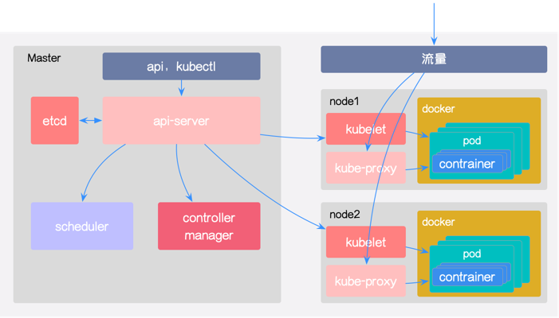

K8S学习笔记（一）- K8S介绍
三月 06, 2022
应用部署方式的演变
传统部署
互联网早期，会直接将应用部署在物理机上
- 优点：简单，不需要其他的技术参与。
- 缺点：不能为应用程序定义资源的使用边界，很难合理的分配计算机资源，而且程序之间容易产生影响。
虚拟化部署
可以在一台物理机上运行多个虚拟机，每个虚拟机都是独立的一个环境
- 优点：程序环境不会相互产生影响，提供了一定程序上的安全性。
- 缺点：增加了操作系统，浪费了部分资源。
容器化部署
和虚拟化类似，但是共享了操作系统
优点
- 可以保证每个容器拥有自己的文件系统、CPU 、内存和进程空间等
- 运行应用程序所需要的资源都被容器包装，并和底层基础架构解耦
- 容器化的应用程序可以跨云服务商、跨 Linux 操作系统发行版进行部署
带来的问题
- 一旦容器故障停机了，怎么让另外一个容器立刻启动去替补停机的容器
- 当并发访问量变大的时候，怎么做到横向扩展容器数量
- 其实就是
容器编排问题……
由问题而产生的编排工具
Swarm：Docker 自己的容器编排工具Mesos：Apache 的一个资源统一管控的工具，需要和 Marathon 结合Kubernetes：Google 开源的容器编排工具
K8S组件
一个 kubernetes 集群主要由控制节点（master）、工作节点（node）构成，每个节点上都会安装不同的组件

控制节点（master）
- API Server：集群操作的唯一入口，接收用户输入的命令，提供认证、授权、API注册和发现等机制。
- Scheduler：负责集群资源调度，按照预定的调度策略将 Pod 调度到相应的 node 节点上。
- ControllerManager：负责维护集群的状态，比如程序部署安排、故障检测、自动扩展和滚动更新等。
- Etcd：负责存储集群中各种资源对象的信息。
工作节点（node）
- Kubelet：负责维护容器的生命周期，即通过控制 Docker ，来创建、更新、销毁容器。
- KubeProxy：负责提供集群内部的服务发现和负载均衡。
- Docker：负责节点上容器的各种操作。
组件调用事例
以部署一个 Nginx 服务来说明 Kubernetes 系统各个组件调用关系
- 首先需要明确，一旦 Kubernetes 环境启动之后，master 和 node 都会将自身的信息存储到etcd数据库中
- 一个Nginx服务的安装请求首先会被发送到 master 节点上的 API Server 组件。
- API Server 组件会调用 Scheduler 组件来决定到底应该把这个服务安装到那个 node 节点上。此时，它会从 etcd 中读取各个 node 节点的信息，然后按照一定的算法进行选择，并将结果告知 API Server。
- API Server 调用 Controller-Manager 去调用 Node 节点安装 Nginx 服务。
- Kubelet 接收到指令后，会通知 Docker ，然后由 Docker 来启动一个 Nginx 的 Pod 。Pod 是 Kubernetes 的最小操作单元，容器必须跑在 Pod 中。
- 一个 Nginx 服务就运行了，如果需要访问 Nginx ，就需要通过 kube-proxy 来对 Pod 产生访问的代理，这样，外界用户就可以访问集群中的 Nginx 服务了。
K8S概念
- Master：集群控制节点，每个集群要求至少有一个 Master 节点来负责集群的管控。
- Node：工作负载节点，由 Master 分配容器到这些 Node 工作节点上，然后 Node 节点上的 Docker 负责容器的运行。
- Pod：Kubernetes 的最小控制单元，容器都是运行在 Pod 中的，一个 Pod 中可以有一个或多个容器。
- Controller：控制器，通过它来实现对 Pod 的管理，比如启动 Pod 、停止 Pod 、伸缩 Pod 的数量等等。
- Service：Pod 对外服务的统一入口，其下面可以维护同一类的多个 Pod 。
- Label：标签，用于对 Pod 进行分类，同一类 Pod 会拥有相同的标签。
- NameSpace：命名空间，用来隔离 Pod 的运行环境。
查看评论